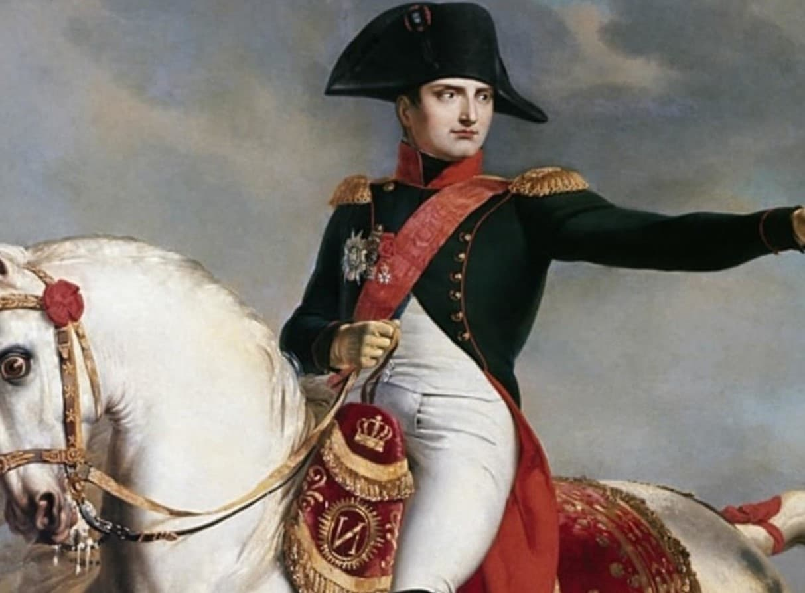

Napoleon Boniparte
Napoleon Bonaparte is regarded as one of history's greatest military leaders, known for his strategic genius and transformative impact on Europe. Born in 1769 on Corsica, he rose from humble beginnings to become Emperor of France, leading France to numerous victories and establishing a vast empire. His innovative tactics and ability to inspire loyalty in his troops revolutionized warfare. Napoleon also introduced major reforms, such as the Napoleonic Code, which influenced legal systems worldwide.
However, his ambition led to his downfall. After a failed invasion of Russia and a series of defeats, he was exiled to Elba, returned briefly to power, and was finally defeated at Waterloo in 1815. Exiled again to Saint Helena, he died in 1821. Despite his controversial legacy, Napoleon's military and political influence remains profound in world history.